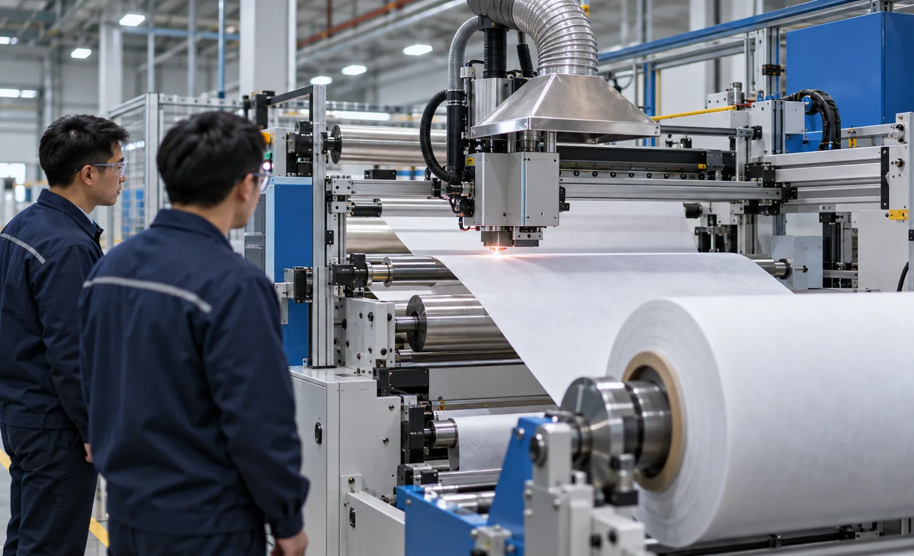
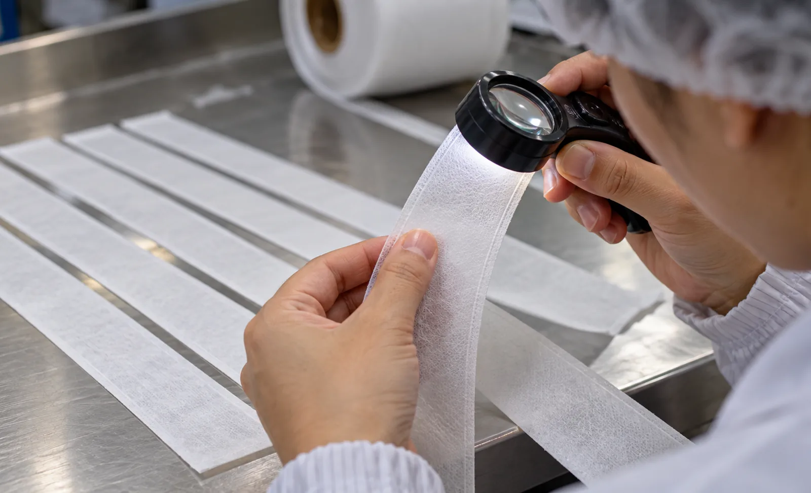

Published September 26, 2026 | By HDPTH Technical Editorial Team

Every buyer of a slitter rewinder eventually meets the laser option. Sales literature shows a glowing line across a moving web and promises edges no blade can match. Some of that is true: a focused CO2 beam cuts synthetic webs without touching them, seals the edge against fraying, and produces no knife dust. Some of it is oversold: laser runs slower than shear slitting on many products, adds a power budget, optics maintenance and extraction infrastructure, and punishes the wrong material with a melted or discoloured edge.
What laser slitting actually does to the edge
A laser slit is a narrow zone of vaporised material. On polypropylene and polyester nonwovens the result is a self-sealing edge: fibres melt back and fuse, so the web no longer sheds lint or unravels — often the decisive argument for wipes, filtration media and medical packaging materials. On aluminium-laminated or heavily coated films, a blade smears the coating and produces debris; a laser cuts through cleanly. On paper and natural fibres the picture reverses, because cellulose chars rather than melts: the edge browns and the smell can transfer. Knowing which physics your material obeys is the first filter, and complements the comparison of slitting methods.
| Material family | Laser edge behaviour | Practical verdict |
|---|---|---|
| PP / PET spunbond and spunmelt nonwovens | Melt-sealed, fray-free, lint-free | Strong laser candidate |
| Laminated films, barrier webs | Clean cut, no coating smear | Strong candidate |
| Cellulose paper, tissue | Charring, browning, odour | Usually keep mechanical |
| High-speed commodity rolls | Edge fine but speed capped by beam | Usually mechanical wins |
Source, power and speed — the numbers behind the demo
Slitting lasers are almost always CO2 sources, most commonly around 10.6 micrometres, because polymer fibres absorb that wavelength and cut cleanly with a narrow heat-affected zone. What matters to the buyer is the matching triangle of source power, web speed and material thickness. A vendor who demonstrated your web at 120 m/min on a 200-watt source may reach a different speed on your production mix at higher thicknesses. Ask three questions in writing: what source power is installed, what sustained line speed was proven on which material, and what the heat-affected zone width is on that material. Any answer given only verbally will not survive commissioning. Where speed is critical and edges need only be clean rather than sealed, compare against a machine with automatic blade changing.
The system around the beam
The source is a fraction of the price and a fraction of the risk. What keeps the cut clean over a shift is the surrounding system. Beam delivery optics must stay free of condensate — a coating of polymer vapour on a lens degrades the spot within hours — so ask for the purge-air concept and the optical cleaning interval. Fume extraction must capture at the cutting point, with filter stages sized for your worst-emitting web at production speed, not at demo speed. The enclosure and its interlocked doors define the laser safety class of the whole machine. And the HMI must integrate laser setpoints into the recipe structure, so an operator changing formats does not tune beam power by feel. A line where these items are priced as accessories is a line where they will be underspecified.

Running costs nobody quotes first
Laser changes the consumables equation rather than ending it. There are no blades to sharpen, which removes the work described in our knife sharpening guide — but there are optics to clean and replace on a schedule, filters to swap and dispose of, source modules with a stated lifetime, and electrical power for the source and extraction fan. Ask the vendor for a twelve-month operating estimate at your duty cycle: optic replacement, filters, source hours, power consumption. Compare that total against blade consumable cost for the same output, using the method in our knife life and consumables guide. On mixed product ranges the honest answer is often that both slitting stations pay for themselves on different SKUs.
Specification checklist before you commit
- Source wavelength, power, cooling concept and stated source lifetime in hours.
- Proven sustained speed and heat-affected zone on your named materials, from trial cuts.
- Extraction unit sized for worst-emitting web at production speed, with filter stages and disposal plan.
- Optics purge concept, cleaning interval and spare lens set included in the offer.
- Machine laser safety classification with interlock test procedure and IEC 60825-1 labelling.
- Twelve-month operating cost estimate: optics, filters, source, power.
Evaluating laser for your product range?
Send HDPTH your material samples, widths and target speeds. We will run trial cuts, report edge quality at fibre level, and recommend laser, mechanical or combined slitting with the numbers attached.
Submit Your Project InquiryQuestions to put to every vendor
- Which exact source is installed, and what is its power and rated lifetime?
- What sustained speed did you prove on my material, and where are the trial cut samples?
- How is the beam path enclosed, and what safety class does the finished machine carry?
- What is the extraction capacity, and what does filter maintenance cost per month?
Frequently asked questions
When does laser slitting justify its cost over mechanical blades?
When edge quality drives your product value and mechanical cutting cannot deliver it: melt-sealed edges on synthetic nonwovens that must not fray, dust-free edges on coated films, or complex contour cuts that knives cannot follow. Laser also removes sharpening and blade-change labour from the consumables budget. If your web tolerates a cleanly sheared edge and runs in high volumes at high speed, mechanical slitting usually remains the more economical choice.
Which laser source is used for slitting webs?
CO2 lasers in the 9.3 to 10.6 micrometre range dominate web slitting because most polymer films and synthetic fibres absorb that wavelength strongly, cutting cleanly with a narrow heat-affected zone. Fibre lasers at around one micrometre suit some thin metallic webs but couple poorly into clear polymers. Ask the vendor to state the source wavelength, power, expected source lifetime and whether the power is matched to your thickest web, not just your most common one.
How is fume extraction handled on a laser slitter?
The vaporised material becomes an aerosol that must be captured at the point of cutting by local extraction hoods, then filtered before discharge. Extraction capacity, filter staging and maintenance intervals belong in the specification, because a starved extraction path degrades cut quality, soils optics and creates odour or workplace exposure problems. Confirm filter disposal cost and whether the extraction unit is dimensioned for your fastest production speed and your worst-emitting material.
What safety requirements apply to laser slitter installations?
Laser cutting on a slitter rewinder is Class 1 laser processing only when the beam path is fully enclosed by guarding with interlocked access doors, so that no radiation escapes during operation. Ask for the laser safety classification of the complete machine, the interlock test procedure, warning labelling per IEC 60825-1, and documentation of any service mode in which higher-class access is possible. Your own site procedures must cover the enclosures, training and maintenance access.